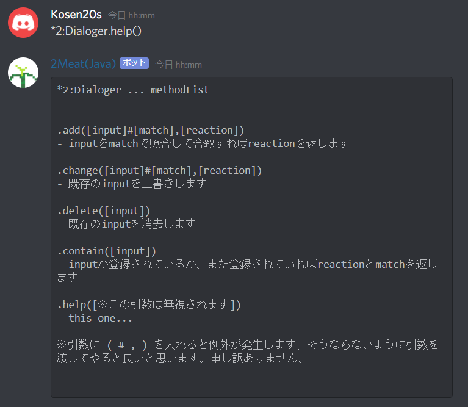

(Kotlin)2Meat
--made by: Nanai10a
特定の言葉に対する反応を記録します。
CotTyan Mark II (Python)
--made by: Laminne33569
権限付与やその他いろいろな機能が搭載されているボット
GitHub: kosen20s/CotTyan MIT Lisence
Leafer (Python)
--made by: Laminne33569
"草" "grass"の単語に反応してGitHubの草(芝)を表示するボット
GitHub: kosen20s/Leafer MIT Lisence